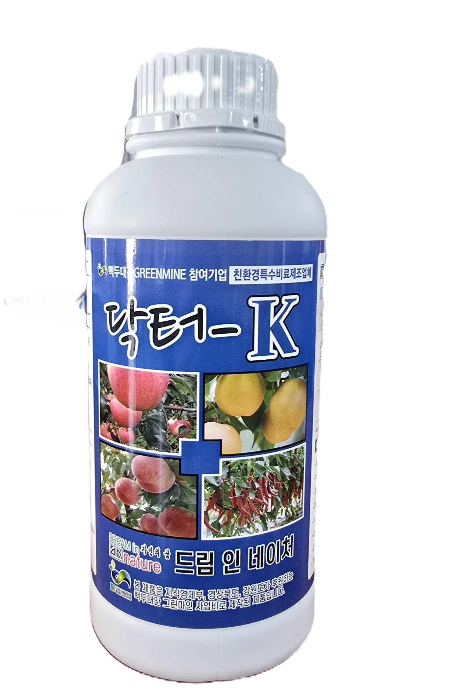
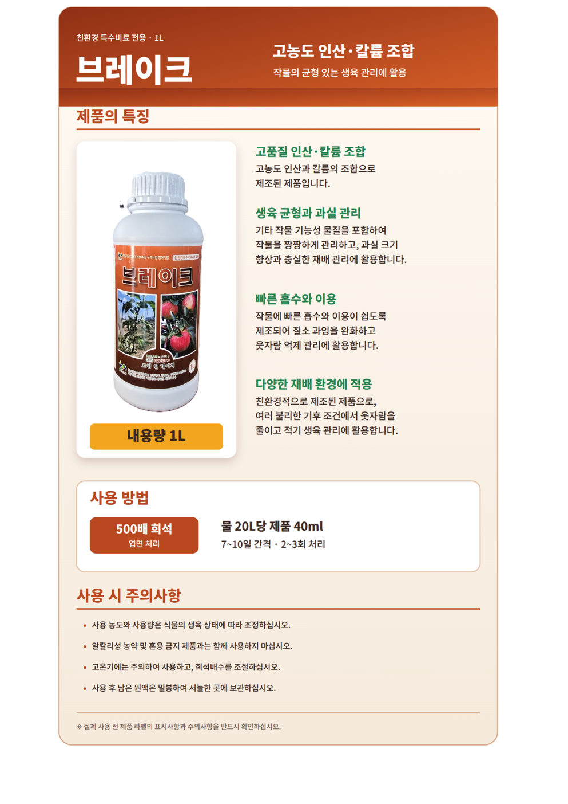
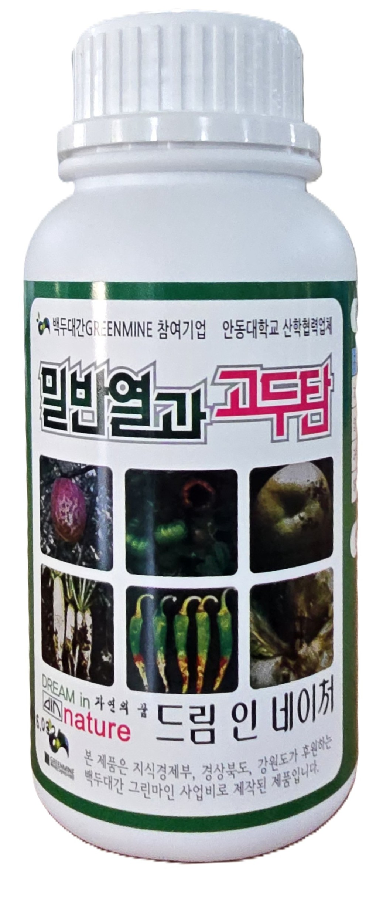
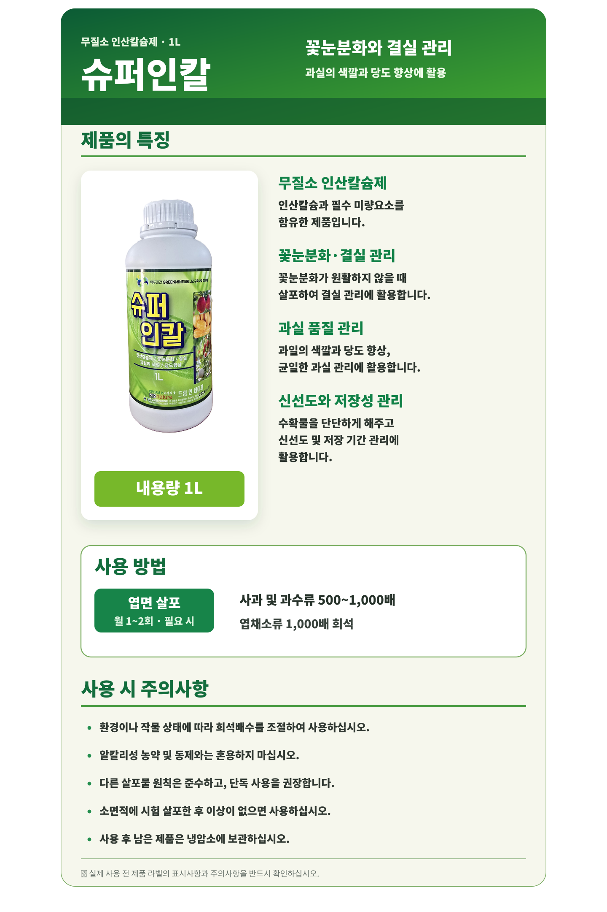
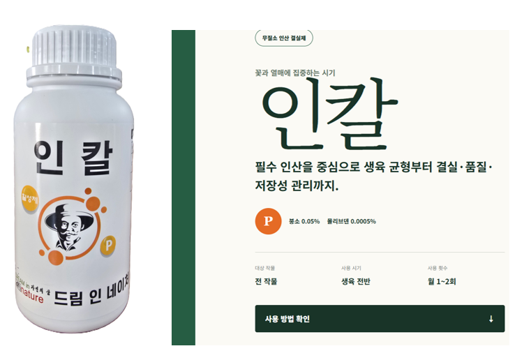
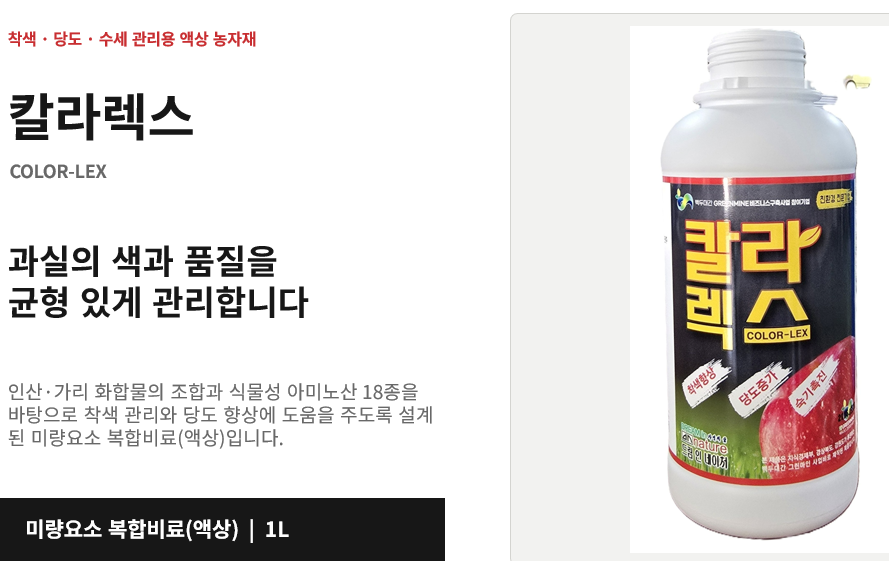
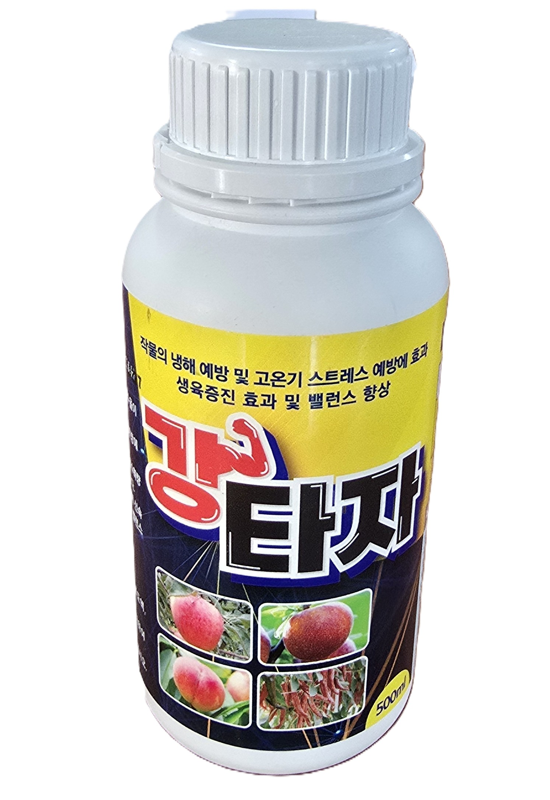

아미노산 첨가
닥터-K
DOCTOR-K · 1,000cc
아미노산이 첨가된 생육안정·품질 관리 전문 비료

고농도 인산·칼륨
브레이크
친환경 특수비료 · 1L
고농도 인산과 칼륨의 조합으로 작물의 균형 있는 생육 관리

수용성 칼슘 17%↑
밀반열과 고두탄
고농도 특수 액상칼슘 · 500cc
천연 유기칼슘을 액상화하여 Bio-water와 혼합한 수용성 칼슘 비료

꽃눈분화·결실 관리
슈퍼인칼
무질소 인산칼슘제 · 1L
인산칼슘과 필수 미량요소를 함유, 과실의 색깔과 당도 향상

무질소 인산 결실제
인칼
꽃과 열매에 집중하는 시기
필수 인산을 중심으로 생육 균형부터 결실·품질·저장성 관리

착색·당도·수세 관리
칼라렉스
COLOR-LEX · 1L
인산·가리 화합물과 식물성 아미노산 18종으로 착색과 당도 향상에 특화

냉해·고온기 스트레스 관리
강타자
미량요소 복합비료 · 500mL
노르웨이산 해조추출물 기반, 냉해 예방과 생육 밸런스 향상

광합성 증진·미네랄
불로초
미네랄 / 최고급 작물 영양제 · 500mL
광합성·엽록소·미량요소 흡수를 한번에 관리하는 신개념 솔루션